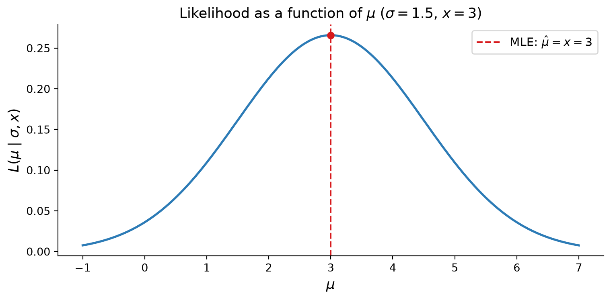
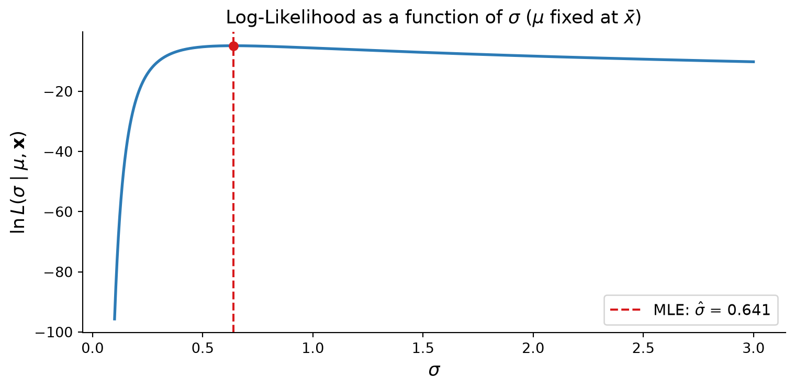

How to Find Maximum Likelihood Estimators for Mean & Standard Deviation
Now that we know what a likelihood is we turn our focus to Maximum Likelihood Estimator (MLE), which simply maximizes the likelihood function.
We will use the likelihood of a normal distribution to find the optimal values for mean \(\mu\) and standard deviation \(\sigma\) given an observation \(x\), i.e., \(L(\mu, \sigma~|~x)\).
MLE for \(\mu\)
If we fix \(\sigma\) as given and plug in many \(\mu\) values into our normal likelihood function, we get multiple likelihood values:
\[L(\mu\text{'s}~|~\sigma, x)\]
We then check which \(\mu\) gives the maximum likelihood. Note that the peak is when the slope of the curve is 0.
import numpy as npimport matplotlib.pyplot as pltfrom scipy.stats import norm# Observed data point and fixed sigmax_obs =3.0sigma_fixed =1.5# Range of mu values to trymu_vals = np.linspace(-1, 7, 500)likelihoods = norm.pdf(x_obs, loc=mu_vals, scale=sigma_fixed)mu_mle = x_obs # MLE for mu equals the observationfig, ax = plt.subplots(figsize=(8, 4))ax.plot(mu_vals, likelihoods, color="#2c7bb6", linewidth=2)ax.axvline(mu_mle, color="#d7191c", linestyle="--", linewidth=1.5, label=r"MLE: $\hat{\mu} = x = 3$")ax.scatter([mu_mle], [norm.pdf(x_obs, loc=mu_mle, scale=sigma_fixed)], color="#d7191c", zorder=5)ax.set_xlabel(r"$\mu$", fontsize=13)ax.set_ylabel(r"$L(\mu \mid \sigma, x)$", fontsize=13)ax.set_title(r"Likelihood as a function of $\mu$($\sigma = 1.5$, $x = 3$)", fontsize=13)ax.legend(fontsize=11)ax.spines[["top", "right"]].set_visible(False)plt.tight_layout()plt.show()

Figure 1: Likelihood as a function of μ (σ fixed, x = 3). The peak marks the MLE.
MLE for \(\sigma\)
We do the same for \(\sigma\), this time by fixing \(\mu\):
\[L(\sigma\text{'s}~|~\mu, x)\]
sigma_vals = np.linspace(0.2, 6, 500)likelihoods_sigma = norm.pdf(x_obs, loc=mu_mle, scale=sigma_vals)# For a single observation the likelihood keeps rising as sigma -> inf,# so we show a multi-observation case to get a proper peak.np.random.seed(42)data = np.array([2.1, 3.4, 2.8, 3.9, 2.5])n =len(data)def log_likelihood(mu, sigma, data):return np.sum(norm.logpdf(data, loc=mu, scale=sigma))mu_hat = np.mean(data)sigma_hat = np.std(data, ddof=0) # MLE uses n in denominatorsigma_range = np.linspace(0.1, 3, 500)ll_vals = [log_likelihood(mu_hat, s, data) for s in sigma_range]fig, ax = plt.subplots(figsize=(8, 4))ax.plot(sigma_range, ll_vals, color="#2c7bb6", linewidth=2)ax.axvline(sigma_hat, color="#d7191c", linestyle="--", linewidth=1.5, label=rf"MLE: $\hat{{\sigma}}$ = {sigma_hat:.3f}")ax.scatter([sigma_hat], [log_likelihood(mu_hat, sigma_hat, data)], color="#d7191c", zorder=5)ax.set_xlabel(r"$\sigma$", fontsize=13)ax.set_ylabel(r"$\ln L(\sigma \mid \mu, \mathbf{x})$", fontsize=13)ax.set_title(r"Log-Likelihood as a function of $\sigma$($\mu$ fixed at $\bar{x}$)", fontsize=13)ax.legend(fontsize=11)ax.spines[["top", "right"]].set_visible(False)plt.tight_layout()plt.show()

Figure 2: Likelihood as a function of σ (μ fixed at x = 3). The peak marks the MLE.
Expanding to \(n\) Observations
Because each sample is independent, the likelihood for \(n\) samples is: